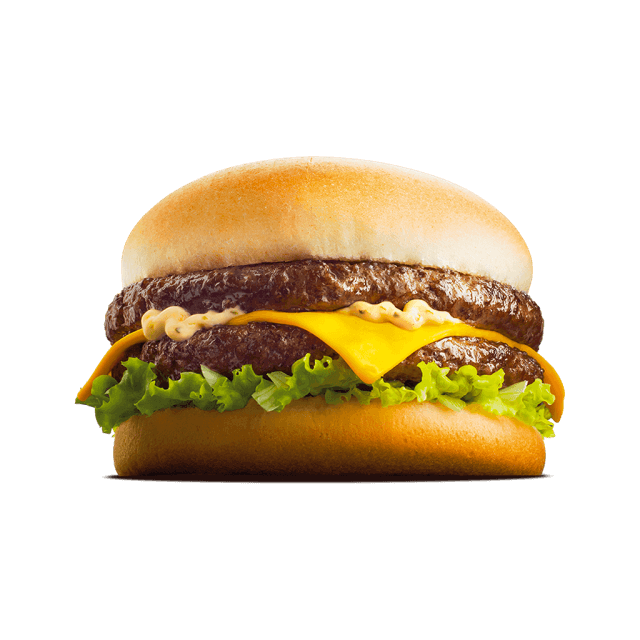

Un hamburger (initialement hamburg-er, soit « galette de Hambourg » en allemand) est un sandwich d'origine allemande, composé de deux pains de forme ronde (bun) généralement garnis de steak haché (généralement du bœuf) et de crudités, salade, tomate, oignon, cornichon (pickles), et de sauce… Ce plat célèbre dans le monde entier est, depuis les années 1950, un des emblèmes de la culture et de la cuisine américaine, ainsi que de la restauration rapide (avec les sandwichs, sandwichs américains, hot-dogs, pizzas, kebabs…). C’est parti pour la recette! Source
Pour 5 personnes :
- 500g de viande hachées ou onglet
- Pain à burger
- Salade
- 1 oeuf
- 1 C. à soupe de moutarde
- Poivre
- Sel
- Ail en poudre
- Oignon en poudre
- Huile végétale
- 2 C. à soupe de sauce relish
- 1 C. à soupe de ketchup
- Cornichon
- Oignons blanc
- Cheddar
Sauce
- Dans un récipient, on commence par casser un oeuf.
- On ajoute une bonne cuillère à soupe de moutarde.
- Sel et poivre.
- Une pointe d'ail en poudre.
- Une pointe d'oigon en poudre.
- On mixe et on fait monter avec de l'huile végétale.
- Une fois la mayonnaise prête, on ajoute 2 C. à soupe de sauce relish (confiture de concombre), et 2 C. à soupe de ketchup.
- On fouette et on laisse reposer au frais.
Instructions
- Dans un récipient déposer la viande hachées et ajouter un oeuf, de la chapelure puis mélanger le tout à la main.
- Former des boules de viandes d'environ 100g, en mouillant les mains pour faciliter l'opération.
- On va applatir nos boules de viandes hachées en utilisant du film étirable ou un cercle adapter à la taille de nos pains.
- Couper l'oignon blanc en petit cube, comme pour le big mac et laisser de côté.
- Couper les cornichons en lamelles et mettre de côté dans du vinaigre.
- Préchauffer le four à 200°C en mode grille.
- Verser une noisette de beurre dans une poelle et déposer la viande.
- Une fois la viande cuite on éteind le feu, on ajoute 2 tranches de cheddar par steack, on met le couvercle pour que le fromage fonde et on réserve.
- On met le pain dans le four quelques minutes.
- On sort le pain du four.
- On dépose une bonne C. à soupe de sauce, un peu d'oignon blanc, la salade, la viande, 2 tranches de cornichons, puis on rajoute 1 C. à soupe de sauce sur le dessus.